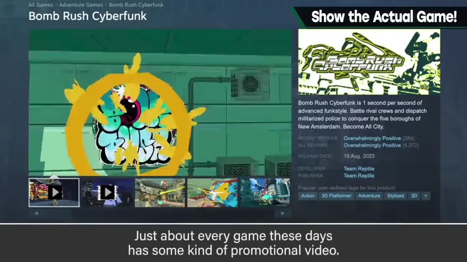
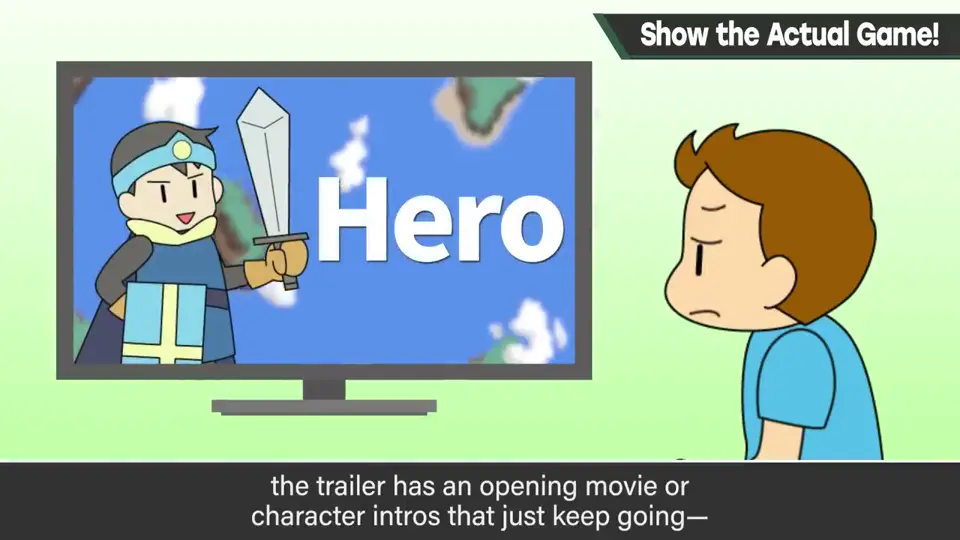
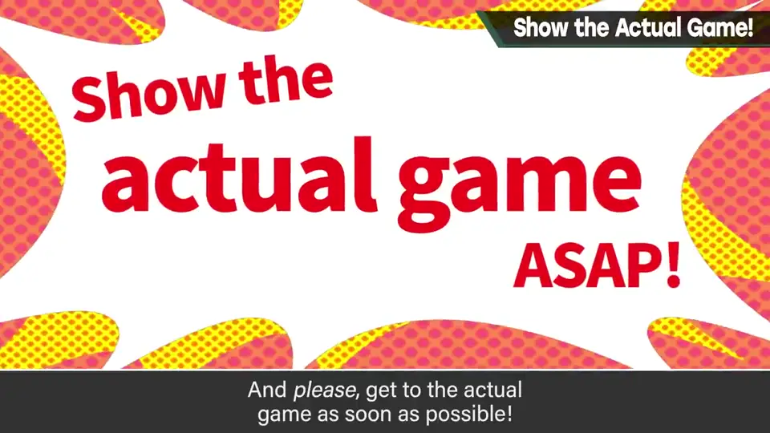
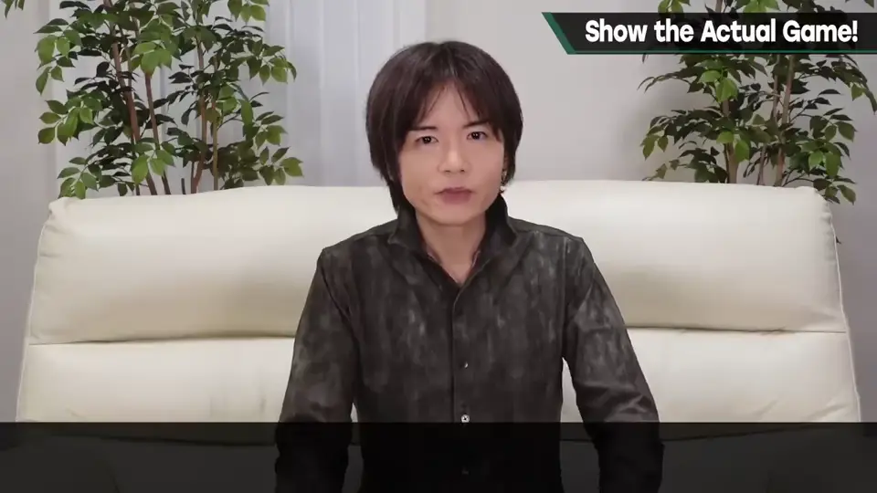
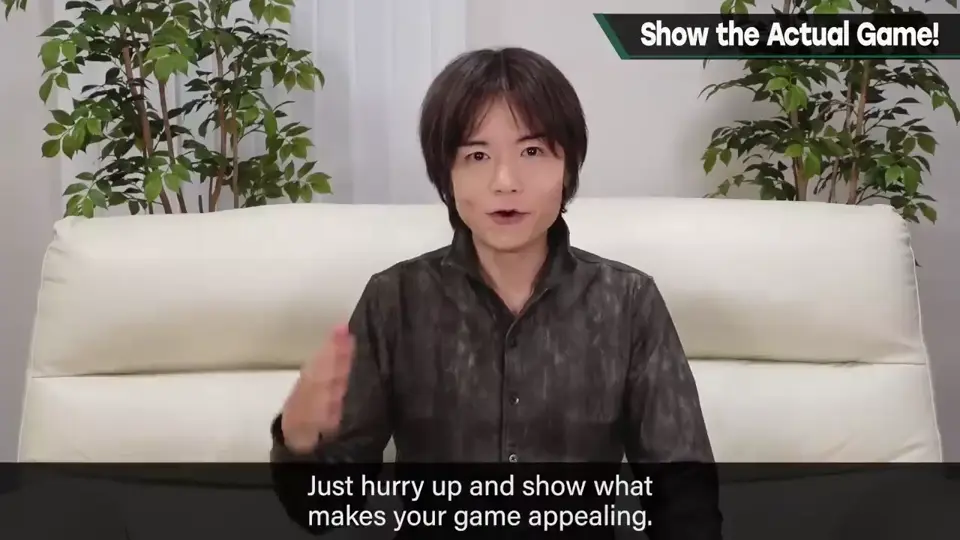
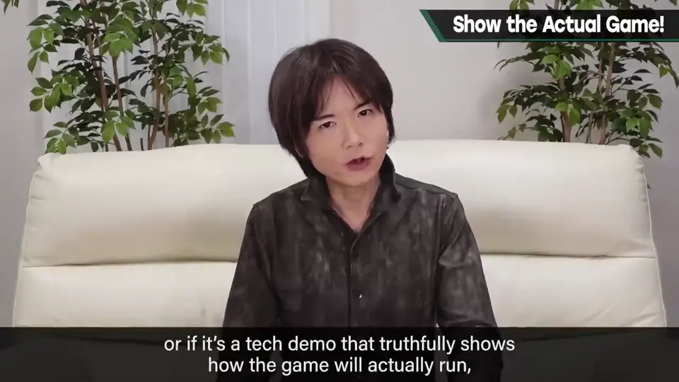
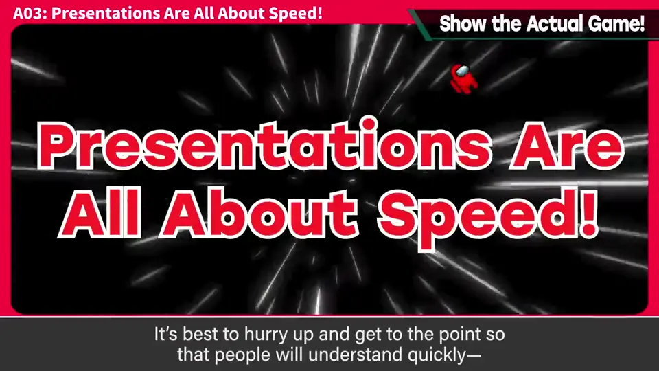

速览
推销游戏时，能确认游戏实际运行的影片非常重要——也就是宣传影片，哪款游戏都有。没有这种影片的游戏，除非特殊情况，否则不会买，免谈，所以可以认为制作影片是必须的。但有时开场动画、角色介绍一直放，迟迟不进入游戏画面的预览；有时甚至例如 Steam 页面顶部的影片完全不含游戏画面。请别这样，尽早放入游戏画面。备受瞩目的系列作、著名制作者的作品，可以容许预告片式的呈现；如果不是，特别是第一作，再加上独立游戏，最好马上展示游戏。宣传影片开头的 logo 和介绍太长的作品太多，他差点养成跳过影片开头的习惯。影片是用来了解游戏怎么样的，所以想马上看到关键的游戏如何；故事和世界观之后再了解就好。影像再努力也比不上电影等，应该一下子展示产品的诉求点。不过除了大作之外也有例外：巧妙融入游戏系统的影片，或处理负荷等没有虚假的技术演示，从演示开始也可以。无论如何，焦点是「主干在哪里」。以前也讲过：演示就是速度，为了让人马上明白，迅速展示主干才划算。
1. 宣传影片必不可少 0:04
推销游戏时，能确认游戏实际运行的影片非常重要——也就是宣传影片，哪款游戏都有。

没有这种影片的游戏，除非特殊情况，否则不会买，免谈。所以可以认为制作影片是必须的。
2. 迟迟不进游戏画面 0:30
但有时开场动画、角色介绍一直放，迟迟不进入游戏画面的预览。


有时甚至例如 Steam 页面顶部的影片完全不含游戏画面。
3. 谁可以「预告式」 0:52
备受瞩目的系列作、著名制作者的作品，可以容许预告片式的呈现。如果不是——特别是第一作，再加上独立游戏——最好马上展示游戏。

宣传影片开头的 logo 和介绍太长的作品太多，他差点养成了跳过影片开头的习惯。
4. 先看游戏，再看故事 1:25
影片是用来了解游戏怎么样的，所以想马上看到关键的游戏如何；故事和世界观之后再了解就好。

5. 例外与原则 1:45
不过除了大作，也有例外：巧妙融入游戏系统的影片，或处理负荷等没有虚假的技术演示，从演示开始也可以。无论如何，焦点在于「主干在哪里」。


以前也讲过：演示就是速度。为了让人马上明白，迅速展示主干才划算。
自测题
1. 宣传影片常见的问题是什么？
开场动画、角色介绍、logo 拖太久，迟迟不进游戏画面，有的甚至完全没有游戏画面。 0:30
2. 什么情况下可以用预告片式的呈现？
备受瞩目的系列作或著名制作者的作品；新作、第一作、独立游戏应马上展示游戏。 0:52
3. 什么例外可以不从游戏画面开始？
巧妙融入游戏系统的影片，或处理负荷等毫无虚假的技术演示。 1:45